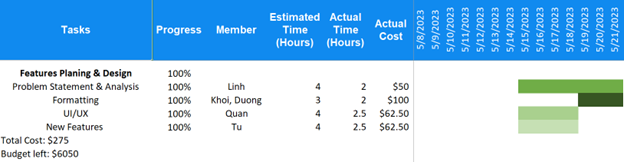

Problem Statement(Final)
Canvas, BUV's learning management system, consistently fails to support students regarding education and personal development. The existing system possesses two significant drawbacks that impede users from achieving their learning objectives: an inadequate interface and an outdated communication system. Therefore, students and staffs become less engaged and inspired as a result, ultimately leading to the reduction of the university's performance and productivity. To address the identified issue, we suggest creating an LMS with two primary characteristics. The initial step involves enhancing the information architecture of the LMS to align with user-centered design principles. In particular, the upgraded interface should offer customization features that allow users to personalize elements like font size, color scheme, and layout. These customization options contribute to a visually attractive and harmonious interface tailored to individual user preferences. Additionally, to address the issues with the current communication system, two key features can be implemented. Firstly, a real-time messaging system can be introduced to facilitate direct and immediate communication between instructors and students. Secondly, the creation of discussion forums for various academic majors within BUV fosters a collaborative environment where students can engage in meaningful discussions and knowledge sharing.
Analysis
Due to the absence of an effective learning management system, BUV is facing challenges in supporting students' growth. Interviews conducted with students and LMS Competitive Analysis revealed two key issues: communication system and interface. This report will provide a comprehensive explanation for selecting the mentioned features and to showcase our team's desire to improve the overall LMS experience. Additionally, we would like to highlight the potential challenges associated with each point and propose suitable solutions to address them.
Based on recent interviews, participants consistently perceive the Discussions feature as only necessary when prompted by instructors during class sessions. In response, our desire is to create a new communication platform that facilitates users in posting technical inquiries, providing solutions, and engaging in discussions on various subjects across different majors at BUV. This platform will enable students to actively participate in discussions and connect with like-minded individuals within the university.
There are two rationales behind the selection of improving the current communication system. Firstly, based on our interviews, all participants (100%) expressed dissatisfaction with the current communication system of the LMS, reporting a lack of value derived from its usage. Lastly, improving meaningful interactions among students will foster a sense of community and encourage peer-to-peer learning, enabling students to learn from each other's experiences and insights.
However, ensuring the quality, appropriateness, and compliance of user-generated content can be complex and demanding. Inappropriate or offensive posts and the presence of spam/irrelevant content are cases in point. To address these challenges, several solutions can be implemented. Firstly, implementing a robust moderation system with human moderators/automated tools can help identify and remove inappropriate content promptly. Secondly, implementing the user reporting features can allow members to flag inappropriate content, aiding moderators addressing content violations. Furthermore, utilizing advanced filtering algorithms and technologies can help automatically detect and block spam or irrelevant content, reducing the burden on moderators and maintaining the forum's integrity. These solutions can help create a safe, engaging, and valuable space for users to exchange ideas and foster meaningful discussions.
When considering the UI/UX of the LMS, there are several reasons for prioritizing it as our second feature to upgrade. The primary rationale stems from the student’s experience, which takes precedence. Based on the feedback from student interviews, it was unanimously expressed by all participants (100%) that the current interface lacks appeal, leading to decreased student engagement and inspiration. Additionally, a modern and visually pleasing interface creates a positive impression, instilling confidence, and trust in the system, and thereby promoting user adoption and participation.
We have considered the potential challenges that may arise during the implementation of the upgrade. It is important to acknowledge that individuals have their own preferences when it comes to design, and the LMS interface is no exception. To address this, our proposed solution is to provide a customizable option that allows users to personalize various elements, such as font size, color scheme, and layout. By offering this flexibility, users can tailor the interface to their liking, creating a more personalized and enjoyable user experience. Another challenge is maintaining a balance between aesthetics and functionality. While a visually appealing interface is important, it should not compromise the usability and efficiency of the system. Engaging user interface experts and conducting user testing throughout the design process can help strike the right balance.
Grant Chart
